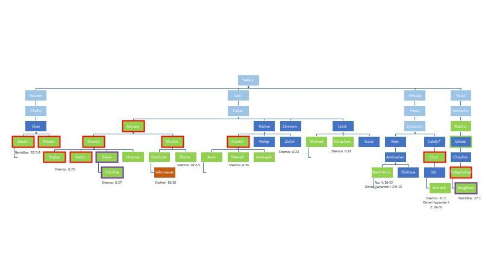

Some observations on biblical genealogy

Listen to the audioMP3
Zoom chat (7 messages)
- 21:08:15Evan's iPhoneWhere’s כלב?
- 21:08:40Jacob ZelmanovitzClearly we're not covering everyone here
- 21:20:33Jacob Zelmanovitz"Hooked up with Tamar"
- that wording is . . . unfortunate, if accurate
- 21:29:08Jacob Zelmanovitzsomeone needs to teach Shimmy how to use Hebrew fonts in Microsoft
- 21:29:50Dov Mandelthat sounds like an offer...but u also need to learn how to spell Shimi!
- 21:38:30Jacob Zelmanovitzfair